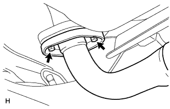

エキゾーストパイプASSY（1NZ-FE(4WD)） 取り外し |
| 1. フロントフロア カーペットASSY FR取りはずし |
参照)| 2. オキシジェン センサ取りはずし |
 |
室内のオキシジェン センサのコネクターを切り離し、ハーネスを車両外側に引き出す。
 |
SSTを使用して、オキシジェン センサを取りはずす。
| 3. エキゾースト テール パイプASSY取りはずし |
|  |
ボルト2本およびエキゾーストパイプサポート2個をはずし、エキゾーストテールパイプASSYを取りはずす。
ガスケットを取りはずす。
| 4. エキゾースト パイプASSY CTR取りはずし |
ナット2個を取りはずす。
エキゾーストパイプサポート2個をはずし、エキゾースト パイプASSY CTRを取りはずす。
ガスケットを取りはずす。
| 5. フロントタイヤ取りはずし |
| 6. フロントサスペンション クロスメンバSUB-ASSY切り離し |
 |
ボルト2本をはずし、パワーステアリングギヤASSY W/ベーンポンプASSYを切り離す。
コッターピンをはずし、キャッスルナットを取りはずす。
 |
SSTをフロントサスペンションロワーアームNo.1 RHおよびLHに取り付ける。
SSTを使用して、フロントサスペンションロワーアームNo.1 RHおよびLHのボールジョイント部をステアリングナックルから切り離す。

| *a | この位置にレンチをかける | - | - |
 |
ボルト4本をはずし、フロントサスペンションメンバリインホースメントRHおよびLHを取りはずす。
 |
ボルトおよびナット2個をはずし、エンジンマウンティングインシュレータRRを切り離す。
 |
ハイミッションジャッキなどでサスペンションクロスメンバを支持する。
図の位置のボルト4本を取りはずし、ハイミッションジャッキでエキゾーストパイプASSY FRが抜けるだけのすき間を確保する。
| 7. エキゾーストパイプASSY FR取りはずし |
ボルト2本およびコンプレッションスプリング2個をはずし、エキゾーストパイプASSY FRを取りはずす。
ガスケットを取りはずす。